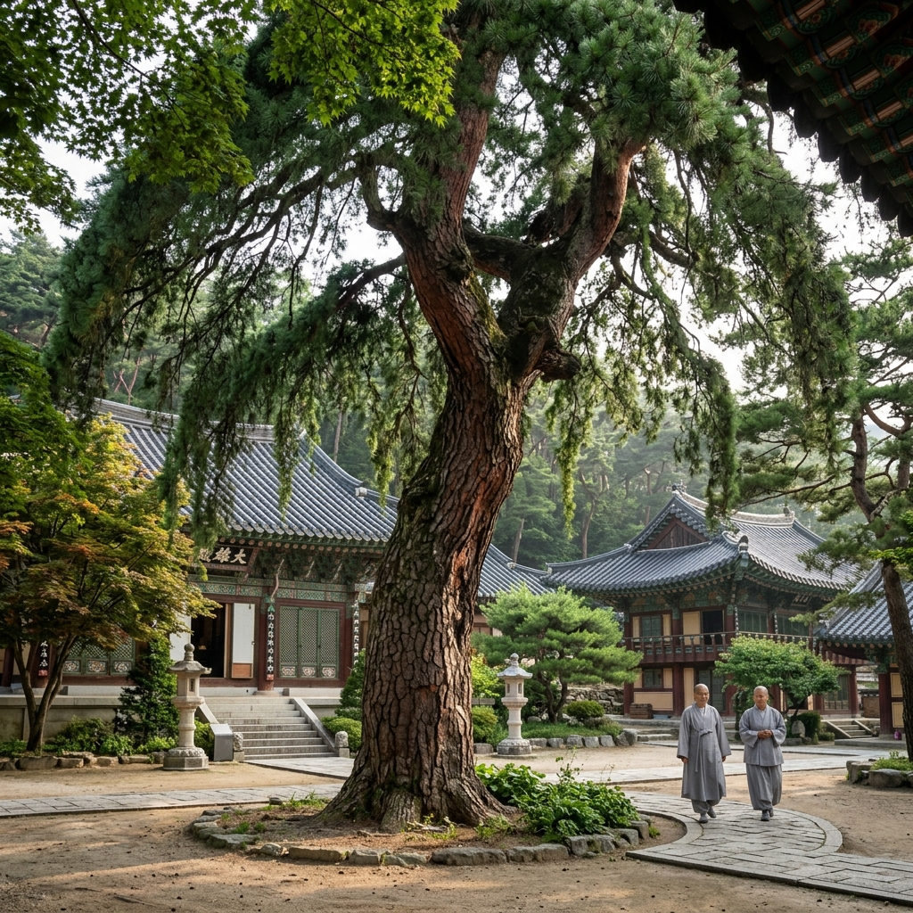
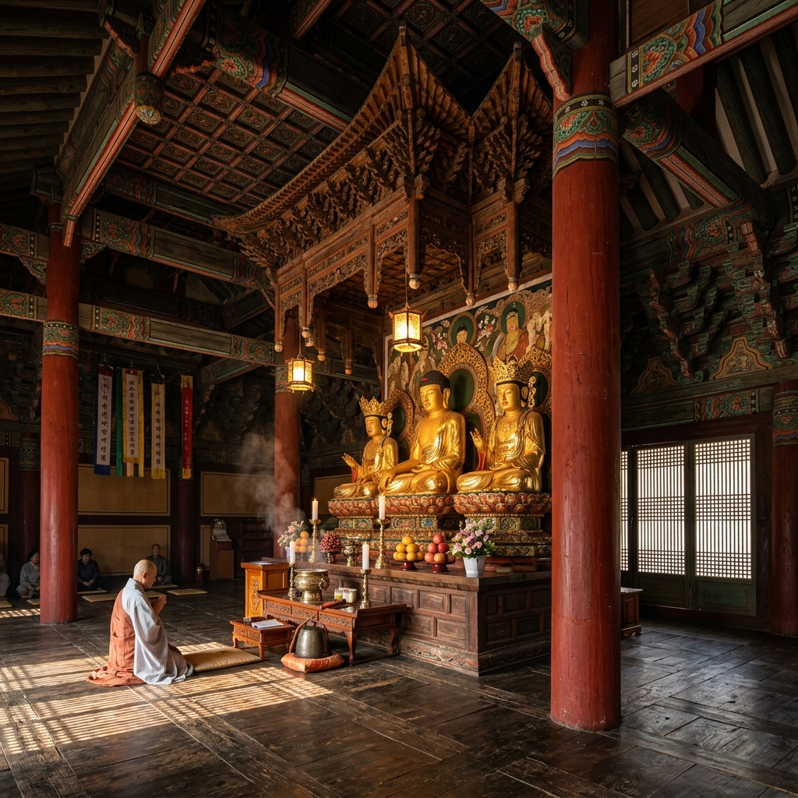
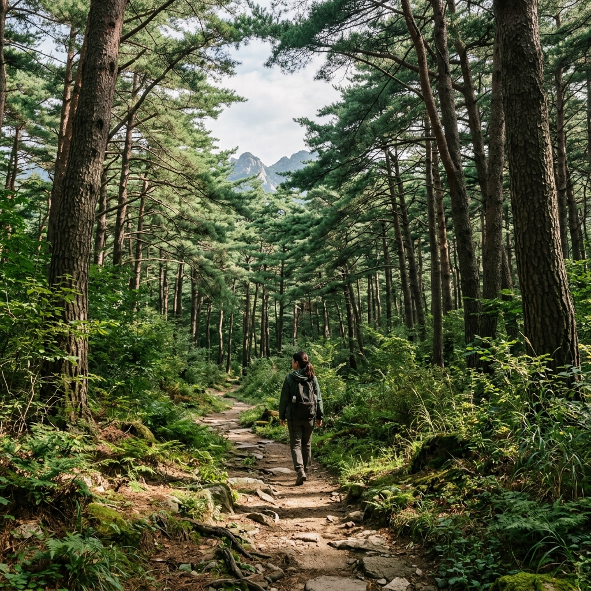

발행일: 2026-05-15 | 카테고리: 경북 청도 국내여행 | 지역: 경상북도 청도군 운문면
📌 이 글은?
천연기념물 제180호 운문사 처진소나무를 직접 보고 쓴 탐방 후기입니다.
6월 신록 시즌을 앞두고, 운문사 경내 보물 투어·운문호 드라이브·청도 연계 일정까지 현실적인 여행 코스를 정리했습니다.
경상북도 청도군 운문면 신원리에 위치한 운문사는 신라시대에 창건된 고찰입니다.
창건 후 560년의 역사를 이어온 운문사는 현재 국내 최대 비구니(여승) 승가교육기관인 운문승가대학이 있는 사찰로 유명합니다.
사찰 자체의 규모가 크지 않아도 경내 분위기가 조용하고 단정해 수행 도량 특유의 엄숙한 아름다움이 있습니다.
관람 시간은 일출부터 일몰까지이며, 비구니 승가대학 교육 기간(3~12월)에는 일부 구역 출입이 제한됩니다. 경내에서는 반드시 정숙을 지켜야 합니다.
입장료는 성인 기준 2,000원으로 매우 저렴합니다.

청도 운문사 솔숲 진입로 — 수백 년 소나무들이 만들어내는 피톤치드 향기 가득한 산책로
운문사 처진소나무(천연기념물 제180호)는 나무를 좋아하지 않는 사람도 감탄하게 만드는 특별한 존재입니다.
수고(나무 높이) 9.4m, 흉고직경(가슴 높이 줄기 둘레) 3.37m에 달하는 거목인데, 가장 독특한 점은 가지가 수직으로 아래를 향해 자라는 '처진' 형태라는 것입니다.
일반 소나무는 가지가 수평 또는 위를 향해 자라지만, 이 나무는 가지 끝이 마치 버드나무처럼 아래를 향해 늘어집니다.
학명상 처진소나무는 Pinus densiflora 'Pendula'로 분류되며, 자연 발생으로 이 규모까지 자란 사례는 국내에서 매우 드뭅니다.
수령은 정확히 알 수 없으나 수백 년으로 추정되며, 6월 신록 시즌에는 짙은 녹색 잎이 아래로 드리워지는 장면이 특히 아름답습니다.
처진소나무는 사계절 내내 아름답지만, 6월 초순~중순이 가장 추천되는 시기입니다.
이 시기 소나무 새 잎인 '솔잎눈'이 완전히 펼쳐지면서 기존의 짙은 녹색 잎과 새 잎의 밝은 연두색이 층위를 이루어 색감이 풍부해집니다.
사진 촬영 최적 시간대는 오전 8~10시입니다. 운문사는 산에 둘러싸여 있어 오전 중 동쪽에서 들어오는 빛이 처진소나무에 직각으로 떨어지는 시간이 한정적입니다.
오후에는 역광 또는 그늘이 생겨 나무의 전체 형태를 포착하기 어렵습니다.
여름 장마철(7월~8월 초) 방문은 피우는 것이 좋습니다. 운문사로 가는 도로가 비 피해를 받는 경우가 간혹 있습니다.
운문사는 처진소나무 외에도 다수의 국가 지정 보물이 있어 한 번의 방문으로 다양한 문화재를 볼 수 있습니다.
| 문화재명 | 지정 번호 | 시대 | 특징 |
|---|---|---|---|
| 처진소나무 | 천연기념물 제180호 | — | 수고 9.4m, 수관폭 25m |
| 운문사 대웅보전 | 보물 제835호 | 조선 후기 | 겹처마 팔작지붕, 내부 닫집 화려 |
| 운문사 금당 앞 석등 | 보물 제193호 | 통일신라 | 8각형 화사석, 균형감 탁월 |
| 운문사 석조여래좌상 | 보물 제317호 | 통일신라 | 항마촉지인, 온화한 표정 |
| 운문사 원응국사비 | 보물 제316호 | 고려 | 귀부와 이수 완전 보존 |
경내 관람 동선은 '일주문 → 처진소나무 → 대웅보전 → 석등 → 석조여래좌상 → 원응국사비' 순서로 진행하면 효율적입니다.
총 관람 소요 시간은 약 40~60분이며, 사진 촬영을 포함하면 90분 정도가 적당합니다.
경내에서 스피커 사용, 큰 소리 대화, 반려동물 동반은 금지되어 있습니다.

청도 운문사 처진소나무 — 수령 400~500년, 국내 유일의 처진소나무 천연기념물
처진소나무는 독특한 형태 때문에 어떻게 찍느냐에 따라 결과물이 크게 달라집니다.
베스트 앵글 3선
1. 정면 로우앵글 — 나무 아래에서 위를 올려다보며 아래로 늘어진 가지와 하늘을 함께 담는 구도. 처진 형태가 가장 극적으로 표현됩니다.
2. 대웅보전을 배경으로 — 처진소나무 오른쪽에서 대웅보전 처마를 배경으로 넣는 구도. 나무와 전통 건축의 조화가 돋보입니다.
3. 후방 역광 실루엣 — 오후에 나무 서쪽에서 역광으로 찍으면 가지 실루엣이 수묵화처럼 표현됩니다.
혼잡 시간대 회피 팁
주말 오전 10시~오후 2시가 방문객이 가장 많은 시간대입니다. 나무 주변에 관람객이 몰리면 인물 없는 순수 나무 사진을 찍기 어렵습니다.
평일 오전 9시 이전 또는 오후 3시 이후에는 여유롭게 촬영할 수 있습니다.
운문사로 가는 길은 운문호 주변 도로를 따라 달립니다.
운문호는 1986년 운문댐 건설로 생긴 인공 호수로, 청도군에서 가장 큰 담수면적을 자랑합니다. 호숫가를 따라 이어지는 도로가 드라이브 코스로 유명합니다.
운문댐 전망대에서는 호수 전체가 내려다보이는 장관을 감상할 수 있습니다. 운문사 방문 전 들르면 도착 전부터 기분이 좋아지는 코스입니다.
5~6월에는 호수 주변으로 초록 수풀이 무성해 마치 스위스 호수를 연상케 합니다.
운문호 수변 카페들이 2024년 이후 급증하여 드라이브 도중 커피 한 잔 즐기는 것도 인기 코스입니다.
운문사 하나만으로는 반나절이면 충분하므로, 청도의 다른 명소를 연계하는 것이 효율적입니다.
| 여행지 | 운문사에서 거리 | 특징 | 입장료 |
|---|---|---|---|
| 청도 소싸움 테마파크 | 약 30분 | 전통 소싸움 문화 체험·상설 경기 | 성인 5,000원 |
| 청도 와인터널 | 약 25분 | 감와인 시음·터널 전시 | 성인 4,000원 (시음 포함) |
| 청도읍성 | 약 35분 | 조선시대 읍성 복원, 산책 코스 | 무료 |
| 운문댐 전망대 | 약 10분 | 운문호 전경 조망 | 무료 |
청도 와인터널은 일제강점기 철도 터널을 와인 저장고로 활용한 독특한 관광지입니다.
청도 감을 원료로 만든 감와인 시음이 포함되어 있어 어른들에게 인기가 높습니다.
운문사 + 와인터널 + 소싸움 테마파크를 하루에 묶으면 알찬 청도 하루 여행이 완성됩니다.
| 출발지 | 이동 수단 | 소요 시간 | 세부 루트 |
|---|---|---|---|
| 대구 (동대구역) | 자가용 | 약 50분 | 경부고속도로 청도IC → 운문사 |
| 부산 (부산역) | 자가용 | 약 1시간 20분 | 경부고속도로 청도IC → 운문사 |
| 서울 (서울역) | KTX + 택시 | 약 3시간 30분 | KTX → 동대구역 → 청도역 (무궁화호) → 택시 |
| 서울 (자가용) | 자가용 | 약 3시간~3시간 30분 | 경부고속도로 청도IC |
대중교통만으로는 운문사 접근이 불편합니다. 청도군 버스가 운문사 방향으로 운행하지만 배차 간격이 길고 시간이 많이 걸립니다.
대구에서 출발하는 경우 자가용 이용이 가장 현실적이며, 동대구역에서 렌터카를 이용하는 것도 좋은 방법입니다.
서울에서 당일치기로 운문사를 방문하는 것은 매우 타이트합니다. 1박 2일 청도 여행을 계획하는 것이 훨씬 여유로운 여행이 됩니다.

청도 운문호 전경 — 에메랄드빛 호수와 산맥이 어우러진 평화로운 풍경
운문사 인근 식당은 많지 않습니다. 운문사 입구 쪽에 산채 비빔밥 위주의 식당 5~6곳이 있습니다.
운문사 산채 비빔밥은 소백산 시래기나 경북 산채를 활용한 곳과 달리 청도 지역 야생 나물을 직접 채취해 내는 곳이 많습니다.
가격은 대부분 1만원 이내로 저렴하며 맛이 소박하지만 정갈합니다.
청도 읍내로 이동하면 감 떡·감말랭이 등 감 가공식품 전문점과 청도 한우구이 전문점이 있습니다.
와인터널 근처에는 감와인과 곁들일 수 있는 치즈 플래터를 제공하는 카페도 생겼습니다.
| 입장료 | 성인 2,000원 / 청소년·군인 1,500원 / 어린이 1,000원 |
| 관람 시간 | 일출~일몰 (하절기 약 06:00~19:00) |
| 주차 | 운문사 주차장 이용 (유료, 약 3,000원) |
| 예절 | 정숙 유지, 반려동물 동반 금지, 경내 음식 취식 금지 |
| 문의 | 054-372-8800 (운문사 종무소) |
| 주소 | 경상북도 청도군 운문면 운문사길 264 |
운문사는 현역 비구니 승가대학이 운영되는 수행 도량입니다.
관람객이 많아지면서 경내 일부 구역 출입을 제한하는 경우가 있습니다. 안내판을 반드시 확인하세요.
스피커로 음악을 틀거나 큰 소리로 대화하면 다른 방문객과 사찰 구성원 모두에게 불편을 줍니다. 수행 공간임을 항상 염두에 두어야 합니다.
🌲 추천 1박2일 청도 코스
1일차
오전: 서울 출발 → 동대구역 도착 (KTX 약 1시간 45분)
오전: 렌터카 수령 → 운문사 출발 (약 50분)
오전: 운문호 드라이브 → 운문사 관람 (처진소나무 + 경내 보물 투어)
점심: 운문사 입구 산채 비빔밥
오후: 청도 와인터널 → 감와인 시음
오후: 청도읍 체크인 / 저녁: 청도 한우구이
2일차
오전: 청도 소싸움 테마파크 관람
오전: 청도읍성 산책
오후: 동대구역 반납 → KTX 귀경
📍 기본 정보
명칭: 운문사 처진소나무 (천연기념물 제180호)
위치: 경상북도 청도군 운문면 운문사길 264
입장료: 성인 2,000원
관람 시간: 일출~일몰
문의: 054-372-8800 (운문사 종무소)
교통: 동대구역 렌터카 이용 약 50분